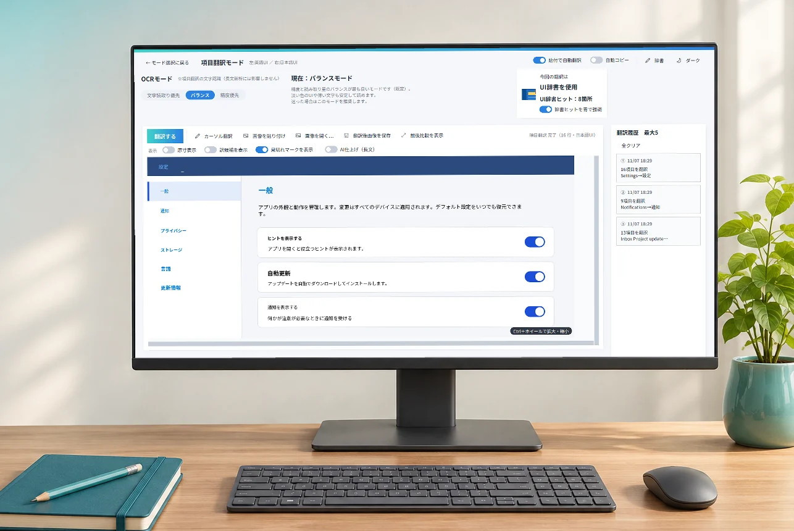
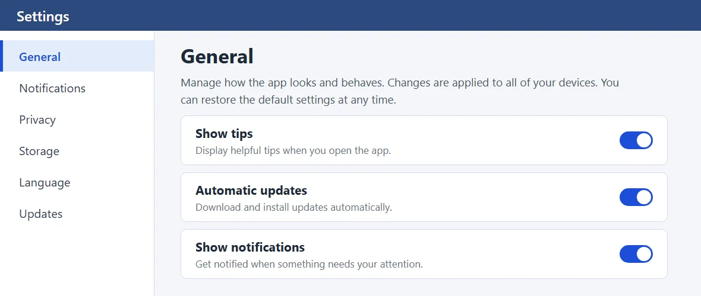
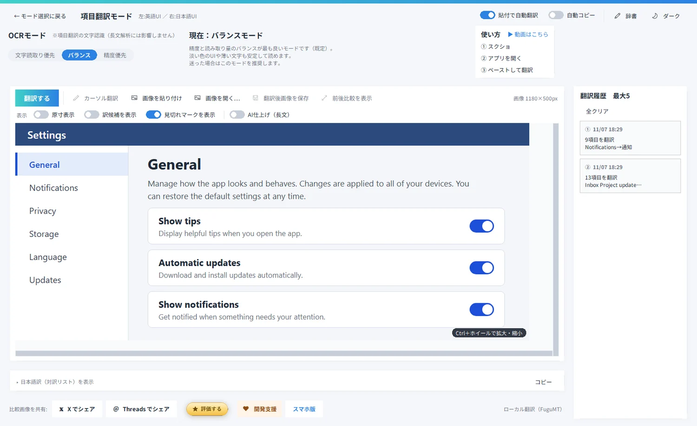
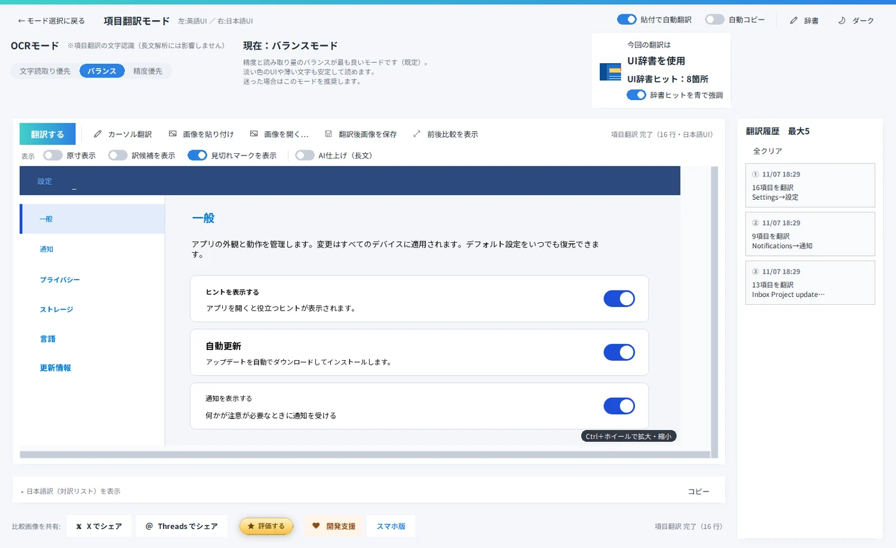
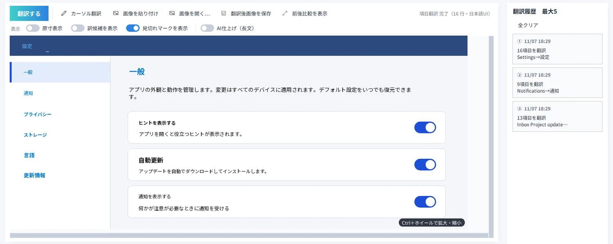
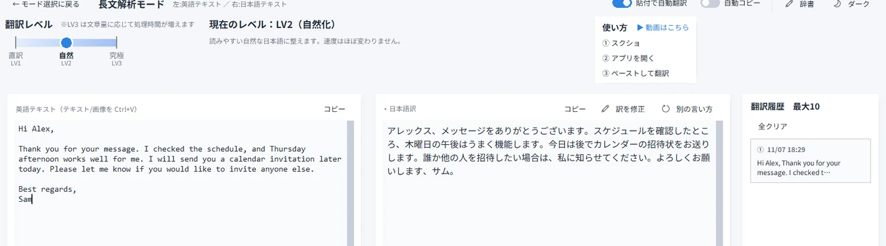
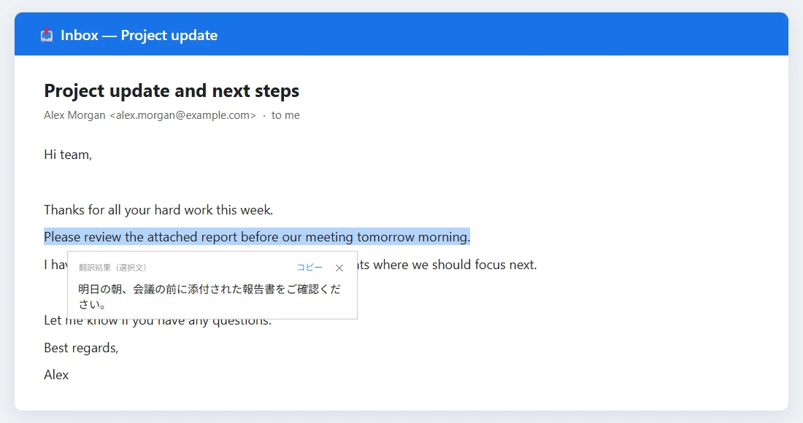
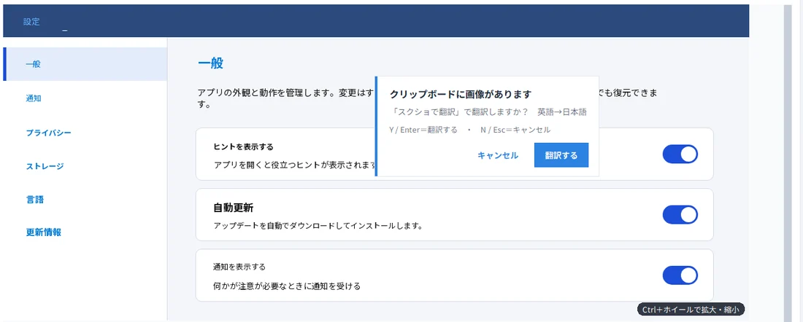
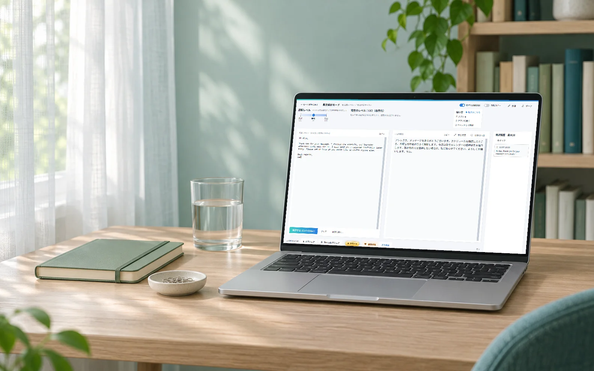

？？
これ、オンのままで…いいのかな？
あるある 01
英語の設定画面で、手が止まった。
ボタンや項目の意味が読めず、押していいのか分からない。先へ進むのが、少し怖かった。
スクショを貼るだけ。元のレイアウトのまま、日本語の訳が同じ場所に重なります。翻訳も、文字の読み取りも、すべてPCの中で行います。
Windows 10（1809以降）／ 日本語→英語は、別アプリの英語版です。

いつものスクショの延長で使えます。文字を一つずつ打ち直す必要はありません。
読みたい画面の範囲を、Windows標準のスクショで撮ります。アプリで画像ファイルを開くこともできます。
「貼付で自動翻訳」は初期設定でON。貼った瞬間に翻訳が始まります。OFFにしたときは Ctrl＋Enter です。
元の位置に、日本語が重なって表示されます。結果は拡大・縮小して確認でき、画像として保存もできます。
読みたい画面の範囲を、Windows標準のスクショで撮ります。
貼った瞬間に、翻訳が始まります（初期設定でON）。
結果は拡大・縮小して確認でき、画像として保存もできます。
↓ スクロールすると、続きが進みます



英語の画面を前に、こんなふうに困ったことは。
ボタンや項目の意味が読めず、押していいのか分からない。先へ進むのが、少し怖かった。
設定 一般 通知 プライバシー ストレージ 言語 更新情報 一般 アプリの外観と動作を管理します。 ヒントを表示する アプリを開くと役立つヒントが表示されます。 自動更新 アップデートを自動でダウンロードしてインストールします。 通知を表示する 何かが注意が必要なときに通知を受ける
文字だけの翻訳は、画面の形が消えてしまう。どのボタン、どの項目の話なのか、元の画面と見比べて探すことになった。
画像をネット上の翻訳サービスに送る形だと、社内の画面や、人に見せたくない画面は、ためらってしまった。
その「困った」を、スクショ1枚で。
元の画像に訳が重なるから、見比べる手間が少なく、どのボタンの話かすぐ分かります。下の線を左右に動かしてみてください。
デモ用の英語画面（設定画面）を、実際にアプリで翻訳した例です。文字の大きさや位置は、元の画像から推定して重ねるため、揃わない箇所があります。結果は、画面によって異なります。
ボタンやメニューの言葉は、内蔵の「UI辞書」で訳します（約2,000語以上）。辞書に当たった箇所は、青で強調できます。
訳が長くて枠に収まらないときは、見切れマークを押すと全文を表示。訳候補を見比べることもできます。
訳されなかった英単語の箇所をドラッグで選んで、その場所だけ翻訳し直す「カーソル翻訳」があります。
読むものに合わせて、2つのモードを使い分けます。

← 横にスクロールして、大きく見られます
画面の中のボタン・メニュー・項目を、元のレイアウトのまま日本語に。

← 横にスクロールして、大きく見られます
メール・記事・説明文などの長い英文を、読みやすい日本語に。
※LV3は、文章量に応じて処理時間が増えます。翻訳レベルは、長文解析モードのみです。
どちらも、設定でONにしたときだけ働く、任意の機能です。

どのアプリでも、英文を選んで Ctrl＋C を2回。カーソルのそばに、日本語の訳がポップアップします。

スクショを撮ると、「翻訳しますか？」と確認が出ます。押すだけで翻訳が始まります。クリップボードの画像は、PCの中だけで確認します。
※Microsoft Storeからの入手・更新には、通信が必要です。社外に出したくない画面を扱うときは、お使いの組織のルールに従ってください。
スクショが撮れる画面なら、どれでも対象です。
ボタンや項目の意味を確かめながら、落ち着いて操作できます。
設定画面 ／ 管理ツール ／ ダッシュボード日本語に対応していないサイトやアプリの画面も、スクショから読めます。
Webサイト ／ アプリ ／ オンラインツール長めの英文は、長文解析モードで。直した訳は、辞書に育っていきます。
メール ／ 説明書 ／ 記事
背景はAI生成の利用イメージ。アプリ画面は実際の翻訳例です。
完全オフラインで動くための、割り切りもあります。入れる前に、ご確認ください。
| 対応OS | Windows 10 バージョン1809 以降 |
|---|---|
| GPU | 不要（CPUで動作） |
| アプリの大きさ | ダウンロード約1.4GB（インストール後は約1.8GB）。翻訳エンジンを同梱 |
| 初回の翻訳 | エンジンの読み込みに、20秒前後かかることがあります |
| 翻訳の速さ | 画面1枚で十数秒（開発機での実測）。PCの性能で変わります |
現在の公開版の料金です。
いいえ。文字の読み取りも翻訳も、PCの中で行い、画像や訳文は外部に送信しません。外部につながるのは、あなたが「Xでシェア」「Threadsでシェア」「開発支援」「スマホ版」を押したときにブラウザを開く場合と、「評価する」を押したときにMicrosoft Storeのレビュー画面を開く場合だけです。
はい。翻訳エンジンはアプリに同梱されているので、翻訳そのものは通信なしで動きます。Microsoft Storeからの入手・更新には、通信が必要です。
現在の公開版は無料で、広告は表示されません。気に入ったときに応援できる、任意の「開発支援」ボタンがあります。支援しても、機能は変わりません。
このアプリは、英語から日本語のみです。日本語から英語は、別アプリの「スクショで翻訳（英語版）」をご利用ください。
撮影機能はアプリにはありません。Windows標準のスクショ（Win＋Shift＋S など）で撮って、Ctrl＋V で貼り付けます。任意の「スクショで自動翻訳」をONにすると、スクショを撮った直後に、翻訳するかどうかの確認が出ます。
完全オフラインで動かすため、クラウド型の翻訳サービスほど自然でないことがあります。長文解析モードでは「訳を修正」「別の言い方」が使え、直した訳は「育てる辞書」に保存されて、次回から反映されます。項目翻訳モードでは、訳されなかった箇所を「カーソル翻訳」で翻訳し直せます。
GPUを使わず、CPUで翻訳します。初回の翻訳は、エンジンの読み込みに20秒前後かかることがあります。長文解析モードのLV3（究極仕上げ）は、文章量に応じて、さらに時間がかかります。
スクショが撮れる画面であれば、翻訳できます。ただし、ゲームの字幕や動画の字幕に特化した機能はありません。
はい。スマホ向けの「スクショで翻訳」は、こちらのページでご紹介しています（アプリの機能は、PC版と異なります）。